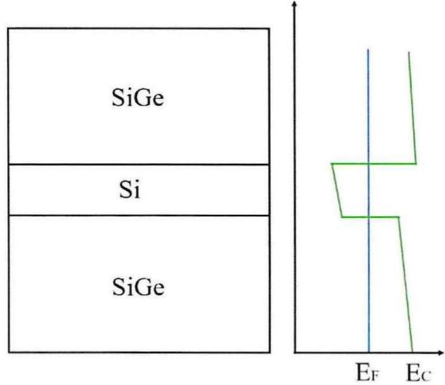

物理图像
Si/SiGe 异质结（Si/SiGe heterostructure）的核心是一个”三明治”：两层 SiGe 之间夹一层薄硅。硅的导带底低于两侧 SiGe，电子被纵向（生长方向 ）束缚在硅层内，形成二维电子气（two-dimensional electron gas, 2DEG）。衬底表面的多层金属栅极再在平面内挖出势阱与势垒，把电子横向局域到几十纳米尺度，得到半导体量子点。
因此，一个 Si/SiGe 量子点是”两级限制”的产物：

Si/SiGe 异质结的能带与结构示意图
能带工程：应变与能谷
双轴张应变
SiGe 的晶格常数大于硅：（30% Ge 含量）而 。薄硅层外延生长在弛豫的 SiGe 虚拟衬底（virtual substrate）上时，会被迫与下方 SiGe 的面内晶格常数一致，从而承受双轴张应变（biaxial tensile strain）
应变有两个后果。其一，它进一步压低硅的导带底：仅靠带隙差（Si 的 略大于 30% Ge 的 SiGe 的 ）并不足以形成电子阱，是应变把硅导带拉到 SiGe 导带以下，才在硅层里凿出一个真正的量子阱。其二，它解除了体硅导带的能谷简并。
谷简并的逐级解除
体硅的导带极小值沿 方向有六个等价谷（valley），在 空间表现为六个旋转椭球。简并的谷态给自旋比特提供了额外的泄漏与退相干通道，必须逐级解除：
- 双轴张应变把六重简并劈成面内四重的 与面外二重的 ，且 远高于 ，实际上退出讨论；
- 纵向限制与栅极电场破坏 方向对称性，把剩下的 二重简并劈开，能隙称为谷劈裂（valley splitting, VS），记作 。
最低谷用于编码单自旋量子比特。电子处于 谷后，面内有效质量仅 ，这是 Si/SiGe 电子迁移率较高的原因之一。
一条提高谷劈裂的材料策略是把少量 Ge 掺进量子阱本身（如 阱，按”最大化平均谷劈裂”的理论选取）：Ge 原子的随机分布平均上增强谷间耦合势，抬高了平均 ；代价是合金无序同步增大（迁移率、渗透密度下降），且仍会留下低劈裂”口袋”。Intel Tunnel Falls 一维阵列上 21 个点的实测（平均 、最大 、瑞利分布、跨栅关联约 720 nm）见谷劈裂词条”介观关联”一节。统一理论进一步判明：这种均匀 Ge 增强属于无序主导区（热点仍在），而长周期摆动阱配合剪切应变可进入确定性增强区（见该词条”统一理论”一节）；异质结缺陷与谷劈裂的空间关联今后可用扫描栅显微的可移动单电子探针逐点成像（见该词条 SGM 测量方法一节）。剖面的进一步系统化设计可交给变分优化：以确定性分量与无序分量之比为目标、加谱约束排除外延不可行的短周期解，优化得到的调制摆动阱在同等 Ge 预算下同时优于常规摆动阱的确定性与可靠性，并把 的电场可调范围扩到 200 µeV–1 meV（见谷劈裂外延剖面优化）。理论侧还需注意：常规局域包络函数计算在锐界面、薄阱或 Ge 尖峰等锐变剖面上存在参考能歧义，定量预测应改用非局域/投影局域多谷包络理论（见谷劈裂词条”非局域多谷包络函数理论”一节）。原子级紧束缚进一步揭示键型层面的机制：合金无序把 3.8 nm 阱的零场谷劈裂压到有序突变势垒值的约 1/3，其中最近邻 Ge–Ge 键是压低劈裂的关键微观通道——只匹配带错位与有效质量的连续模型不足以刻画 Si/SiGe 界面（见该词条”原子级紧束缚视角”一节）。
谷劈裂的定量描述可用两个谷态张成的二能级有效哈密顿量：
其中谷耦合 是界面势在两个谷态之间的矩阵元。这个写法直接解释了实验规律：界面越锐利、纵向电场把波函数压得越紧， 越大；而 Si 量子阱与 SiGe 间隔层界面上的原子台阶会让不同横向位置的 相位不同、相干叠加相消，从而显著抑制谷劈裂。这也是 Si/SiGe 相对 Si-MOS 的主要短板：MOS 的 Si/SiO₂ 界面势垒极陡，谷劈裂天然更大，而 Si/SiGe 的化学界面较”软”， 偏小，需要靠优化基片结构与生长工艺改善。

掺杂 GaAs/AlGaAs 异质结层结构与垂直能带图
理论模型
纵向限制：量子阱与二维电子气
未掺杂的 Si/SiGe 在接近绝对零度时本征载流子几乎为零，电子由离子注入区经引导栅（lead/accumulation gate）引入。给表面栅极加正电压使导带倾斜，当量子阱导带底被拉到费米面 以下时，电子在阱中聚集。电子在 方向被量子阱顶部的三角势阱限制、能级分立，在 – 平面内准自由运动——这就是 2DEG。
横向限制：谐振子势与轨道能
栅极在平面内造出的束缚势通常近似为对称谐振子势
为最低两个轨道的间距， 为势阱特征长度。用量子点物理尺寸 作粗估，轨道能标为
代入 ： 给出 ， 给出约 。这条关系同时解释了硅基器件的加工压力： 比 GaAs 大得多，要拿到同样的轨道能标，量子点必须做得更小（Si/SiGe 约 ，Si-MOS 约 ）。
电荷自由度：常相互作用模型
是量子点总电容。相邻库仑阻塞峰的间距对应加电子能
其中 为自旋（塞曼）劈裂。可分辨的库仑峰要求两个条件：，以及量子点与源漏的隧穿电阻 。Si/SiGe 量子点的 通常约 （对应 ），而液氦温度 已相当于 的热涨落——所以 下通常看不到清晰库仑峰，实验必须在 – 的稀释制冷机中进行。
自旋比特与 EDSR
外磁场 下电子自旋塞曼劈裂 ，以拉莫尔频率 进动。加一个垂直于 的交变磁场后
转到驱动场的旋转坐标系并作旋波近似：
给出绕 轴的旋转， 选定赤道面内的旋转轴，二者合起来就是普适单比特操作：共振（）且 时得到绕 轴的拉比振荡， 得到绕 轴的旋转。
硅的本征自旋–轨道耦合很弱，Si/SiGe 因此不像 应变锗 那样能直接电驱自旋，而要在栅极之上集成微磁体人为造出磁场梯度，用电偶极自旋共振（EDSR）操控。微波电场推动电子波函数在横向梯度场中往复振荡，等效交变磁场为
其中 是微波电场幅值， 是微磁体的横向磁场梯度。把 与 代入即得
也就是说驱动效率对轨道能隙是平方反比的：势阱越软、量子点越大，同样功率能翻转得越快。这条标度是翻转模式量子比特的直接动机——把电子放到双量子点失谐零点，电偶极矩显著增大，Si/SiGe 中曾用此法把驱动效率提高近三个数量级。代价是势垒层合金无序在器件间制造显著的谷劈裂与隧穿耦合涨落：含显式 Ge 缺陷分布的系综模拟表明，单点 EDSR 几乎不受影响，而翻转模式的性能随无序实现大幅涨落、谷劈裂过小的器件甚至无法工作——Si/SiGe 的合金无序由此从”界面锐度”问题延伸为比特良率问题。
交换相互作用与两比特门
两个各占据一个电子的相邻量子点构成海森堡自旋对：
在直积基 下可写成
为平均塞曼能， 为塞曼能差——在 Si/SiGe 中它由微磁体的纵向梯度提供，正是比特寻址的依据。
在 Hubbard 极限下，交换强度为
为点间隧穿耦合， 为平均充电能， 为失谐。
与 的比值决定可用的门类型。Si/SiGe 自旋比特实验通常处于 ：本征态近似为直积态，打开 后反平行态能级下移 ，一个比特的共振频率依赖另一个比特的自旋态，由此可做受控旋转乃至CNOT 门。若不加微波，只开关 让相位累积 ，取 并补两个单比特 旋转即得 CZ 门：
实验上调 有两条路：改失谐 ，或在 处改点间势垒。后者称为对称操作（symmetric operation）——失谐零点处自旋比特对电荷噪声一阶不敏感，因此是抑制退相干的首选工作点。
参数与量级
| 量 | 典型值 | 来源 |
|---|---|---|
| Si 量子阱厚度 | 、 | |
| SiGe 间隔层厚度 | （常用区间 –） | |
| Si 帽层 / SiGe 缓冲层 / 渐变缓冲层 | / / | |
| Ge 组分 | – | 、 |
| 晶格常数 | ， | |
| 面内有效质量 | ||
| 量子点尺寸 | ||
| 充电能 | （2×2 阵列实测 –） | |
| 杠杆臂 | ||
| 最近邻隧穿耦合 | 约 – 连续可调，平均值可推到近 | |
| 次近邻隧穿耦合 | 零附近 → （中心栅调控） | |
| 比特频率 | / （，含微磁体贡献） | |
| 自旋弛豫 | / | |
| 退相干 （自然硅） | / | |
| Hahn echo | / | |
| Rabi 频率 | 随驱动幅值线性增长，最高约 | |
| 门保真度（自然硅） | 单比特 ，CZ |
材料生长与器件工艺
异质结用化学气相沉积（CVD）生长，顺序是：P 型 Si(100) 衬底 → Ge 组分渐变的 SiGe 缓冲层（约 ，降低穿透位错）→ 化学机械抛光（CMP）平整界面 → 固定组分 SiGe 虚拟衬底（）→ Si 量子阱（）→ SiGe 间隔层（）→ Si 帽层（，防氧化）。应变渐变并非唯一路线：液相释放的弹性应变弛豫用湿法转移的 SiGe 纳米膜做虚拟衬底，完全不引入失配位错（代价是距量子阱 625 nm 处出现非外延键合界面），首个膜上双量子点已验证全部调控能力——见Si/SiGe 纳米膜词条。
三个厚度是折中出来的：
- 量子阱过厚会超过临界厚度、应变弛豫，过薄则显著降低迁移率；
- 间隔层过薄会引入远端散射降低迁移率，过厚则削弱栅极对量子点的控制力；
- 界面锐利度直接决定谷劈裂，原子台阶必须尽量抑制。
器件侧，Si/SiGe 采用重叠栅极（overlapping gate）结构，逐层铝栅之间靠等离子体氧化生成的约 致密氧化铝绝缘，层间保持约 厚度差以免爬坡断裂。栅极按功能分三层：屏蔽栅（screening gate，定义一维导电沟道）、能级栅与引导栅（plunger / lead gate，调电化学势并把离子注入区的电子引入）、势垒栅（barrier gate，控制点间与点–库隧穿）。做自旋比特时再加一层微磁体，共四层电子束曝光。
绝缘层做了差异化设计：场氧层约 （保证栅极与离子注入区绝缘），栅氧层约 （更薄以减少氧化铝中的电荷缺陷，抑制电荷噪声）。核心区用电子束光刻（最小线宽可达 ，套刻精度优于 ），外围扇出电极用激光直写，两者以金属”补丁”互连，兼顾精度与效率。
实验特征与测量
降温前后的常规表征。 先测沟道开启与逐栅夹断（pinch-off）曲线确认每个栅极都能关断沟道；再扫能级栅看库仑阻塞峰。因为 相对 的热涨落不够大，液氦温区一般看不到清晰库仑峰，必须进稀释制冷机。冷却后阈值电压的器件间漂移（标称相同器件可差 ~700 mV，源于界面陷阱电荷冻结）可用 780 nm 光照 + 栅偏置系统调定——宽偏压范围内阈值等于光照时所加偏压，见界面缺陷词条的光照阈值调定一节。
单点参数。 输运测量给出库仑菱形，从中提取充电能与杠杆臂；库仑峰宽度可反推电子温度。二维四点阵列的实测显示四个点都能排空到零电子区， 一致在 附近，而 在 – 之间浮动，差异主要来自屏蔽栅形状。更早的 Pd 栅耗尽型双点（2010 年前后）已给出同一套表征流程的完整范例：交叉杠杆臂 –、、偏压极性依赖的共隧穿亚结构，以及点间隧穿率的 WKB 指数标度（）——见隧穿耦合词条的输运谱学提取一节。
双点与阵列。 用邻近的单电子晶体管（SET）作电荷传感测电荷稳定图，蜂窝的反交叉给出点间耦合；未掺杂高阻 2DEG 上传感点欧姆接反射仪不可行时，可把谐振电感接到传感点积累栅并以 解耦欧姆接触——1 s 采完高分辨稳定图并支持单发电荷/自旋读出，见栅极射频传感的积累栅电导传感一节。栅极之间存在电容串扰，隧穿线并不与坐标轴平行，需要先建立虚拟栅极（由串扰矩阵定义）才能独立调节各点电化学势。在 2×2 二维阵列中，两次”同步扫描”即可一次看到四对双点的反交叉，实验相图与 Hubbard 模型模拟（平均 、最近邻 、最近邻库仑 、次近邻 、、）相符。势垒栅对 的调控呈指数依赖；对角与反对角（次近邻）耦合在中心栅零压时接近零，正好满足表面码只要最近邻耦合的拓扑要求。
自旋比特。 微磁体产生的杂散场使比特频率有约 的不确定度，而共振峰宽仅 ，逐点扫频效率极低；实用做法是先用 chirp 波形（如 带宽、）粗扫出 EDSR 峰，再降功率精扫。判据是改变外磁场时峰按 移动—— 增加 时实测峰移 ，与理论 相符。由共振峰半高全宽 可初估
在 下测得两个比特频率 与 ：两者相差 ，正是微磁体纵向梯度带来的寻址间隔；而 对应总场约 ，说明微磁体贡献了近 的纵向场。
相干性测量。 用” 脉冲 + 等待”的指数衰减拟合； 用Ramsey 干涉，包络为高斯
动力学解耦的最简形式 Hahn echo 用
拟合，衰减指数 指示噪声谱型： 对应白噪声， 对应准静态噪声。
相干性与噪声
Si/SiGe 的相干优势来自核自旋：硅天然富集零核自旋同位素，还可进一步同位素纯化。历史节点上，2012 年 Si/SiGe 量子点中的自旋比特首次做到 ，已是同期 GaAs 的 40 倍。
但纯化并不是万能解。自然硅 Si/SiGe 器件实测 –；Hahn echo 只把它拉长十几倍到 –，而若噪声纯粹来自核自旋，回波理论上应能提升数百倍。衰减指数指向接近 的谱型，说明除核自旋外还有显著的低频电荷噪声。更关键的是，纯化硅器件里 同样普遍只有几微秒——微磁体在带来可寻址梯度场的同时，也把电荷噪声通过杂散梯度场”翻译”成了磁噪声。因此 Si/SiGe 的相干性瓶颈已经从核自旋转移到电荷噪声与微磁体设计的耦合上，抑制路径包括优化微磁体几何、减薄栅氧以减少氧化铝中的电荷缺陷（界面缺陷），以及在失谐零点作对称操作。
在有限相干时间内提高门数量是另一条工程路线：用 Rabi 振荡的品质因子 （）权衡速度与相干性， 随驱动幅值先升后降（低功率受限于速度，高功率受限于微波加热），取峰值处的驱动参数。自然硅四点阵列中 可超过 300，对应单 脉冲保真度估计 ；随机基准测试确认单比特门保真度超过 ，CZ 门约 ，配合动力学解耦的 DCZ 门可制备平均保真度 的贝尔态。
与谐振腔的杂化
Si/SiGe 的另一条扩展路线是把量子点接到微波腔上，做电路量子电动力学式的远程互连。由于电偶极矩有限，传统 腔难以进入强耦合区；实用做法是用高动态电感薄膜（如 TiN，方块动态电感 ）做高阻抗谐振腔。真空涨落电压 ，因此耦合强度按
放大： 相对 理论上增益约 倍。
在 Si/SiGe 三量子点–高阻抗腔器件（，）中：
电荷比特退相干率远高于自旋比特（ vs ），这正是 Si/SiGe 混合系统把研究重心从电荷自由度转向自旋自由度的实验理由。
与其他材料平台的比较
| 平台 | 量子点尺寸 | 主要优势 | 主要挑战 |
|---|---|---|---|
| GaAs/AlGaAs | 百纳米以上 | 迁移率极高、加工容易 | 全部同位素含非零核自旋， 仅纳秒量级 |
| Si/SiGe | 迁移率高、无序低、可同位素纯化、与产线兼容、易二维扩展 | 谷劈裂偏小、本征自旋–轨道弱需微磁体、电荷噪声 | |
| Si-MOS | 衬底稳定、与 CMOS 完全兼容、2DEG 贴近表面栅控灵敏 | 界面缺陷与电荷陷阱多、迁移率低、易形成杂点 | |
| Ge/SiGe | 百纳米量级 | 本征自旋–轨道强，无需微磁体即可全电控快速操控 | 热预算低，与现有产线兼容性受限 |
| Si:³¹P 施主 | 原子级一致性 | 制备与调控极困难 |
与其他概念的关系
- 异质结提供二维电子气，栅极再把它切成量子点、双量子点乃至量子点阵列。
- 单点性质经库仑阻塞与库仑菱形表征，双点及以上经电荷稳定图表征，参数换算依赖杠杆臂与常相互作用模型。
- 比特层面：单自旋量子比特由EDSR + 微磁体操控，两比特门经交换相互作用实现；读出用单发读出或色散读出；高谷劈裂外延设计（ meV）把运行温区推到 750 mK 仍保 99.8% 单比特保真度，见高温自旋比特运行。
- 扩展层面：虚拟栅极与串扰矩阵是阵列可调性的前提，二维阵列是表面码纠错的物理载体；片上 FET 开关树复用（16 建造区、~2 K 运行）把外延平台的表征与读出引线按 Rent 定律压缩，见大规模量子点多路复用表征。
- 杂化层面：高阻抗谐振腔把电荷–光子耦合与自旋–光子耦合推入强耦合区，为远程互连铺路。
- 限制层面：电荷噪声与界面缺陷是当前相干时间的主要瓶颈。
- 编码层面：电荷量子比特在非掺杂 Si/SiGe 四量子点上已实现双轴相干控制与 80 ps 条件 π 相位翻转（电容耦合 ≈18 GHz），是平台快门控动力学的实验基准。
- 工艺层面：激光退火欧姆接触用局部固相外延替代 700 °C 全局退火激活注入施主，保住界面锐度与 Ge 浓度剖面——热预算敏感的先进异质结的接触方案。
参考文献
- Si/SiGe 量子点测控的代表性实验：Noiri et al., Nature 601, 338 (2022)、Xue et al., Nature 601, 343 (2022)；综述见 Zwanenburg et al., RMP 85, 961 (2013)。
完整文献库（含各篇站内全文页）见 参考文献库。